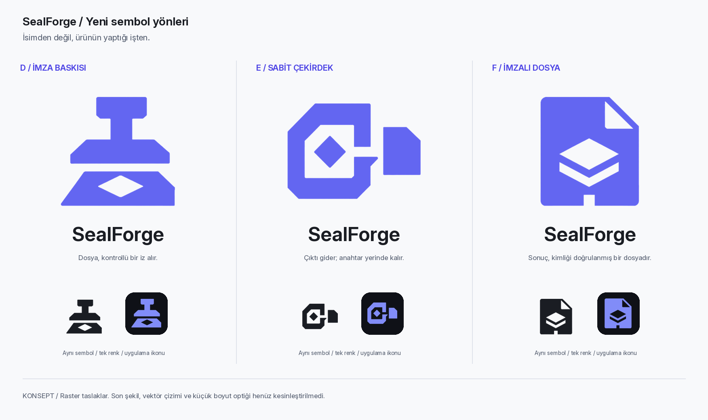

İmza baskısı
Dosya, kontrollü bir iz alır.
Üstte sabit imza aracı, altta izini alan dosya yüzeyi. Ürünü bir kalkan yerine kontrollü bir imzalama işlemi olarak anlatıyor.
Büyük gör & değerlendirTasarım araştırması / 2. tur
Bu turda S/F monogramı yerine üç farklı fikir var: dosyaya iz basılması, anahtarın korunan merkezde kalması ve imzalı dosyanın teslimi. Renk veya yazı tipi değişikliği değil, sembolün anlamı değişiyor.

Dosya, kontrollü bir iz alır.
Üstte sabit imza aracı, altta izini alan dosya yüzeyi. Ürünü bir kalkan yerine kontrollü bir imzalama işlemi olarak anlatıyor.
Büyük gör & değerlendirÇıktı gider; anahtar yerinde kalır.
Korunan merkez yerinden çıkmıyor; dışarıdaki parça işlenmiş dosyayı temsil ediyor. Donanım içindeki anahtar ve dışarı verilen imza sonucuna dayanıyor.
Büyük gör & değerlendirSonuç, kimliği doğrulanmış bir dosyadır.
Dosya silueti içindeki katmanlı iz, imzalanmış yazılım paketine odaklanıyor. Merkezde anahtar değil, güvenle teslim edilen çıktı var.
Büyük gör & değerlendir